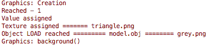
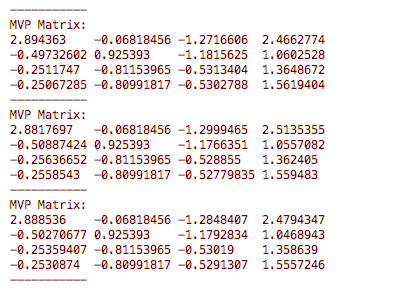

Contributions Week-VII & VIII
Hello World.!
This is my weekly report 7 and 8 on the AR Library for Processing-Android which is a Library that will help creating Augmented Reality applications using Processing through Android Mode.
On continuation to the previous week which dealt with the fixing the background of the AR scene and also the consistency of the object in the scene. This week began by implementing the plane renderer and the point cloud renderer integration with the Processing core. To be short there were a lot of bugs that I came accross while this implementation since working with the core was new to me and with the help of my mentors I was able to fix most of it and Overall the renderer was made consistent with the basic AR sub-renderer requirements. Later I began with the Object renderer part. Ideally, there are two cases to deal with : the processing native shapes PShapes and the raw object file that are fetched from the data directory.
Initailly, I ran into some error due to checks that ARCore performed in the activiy call backs such a onPause() and onResume() in most of the cases it was fine, but during the initial run (first run) of the app when the permission dialogue is open this exception was caused and then the source was figured out. Later, to start with the object renderer I thought of working with the importing object from the .obj file and placing them in the scene since I'm familiar with working with those kinda files and later with the PShapes.
To begin with the object files import, I imported a few obj model from poly.google.com which are under common creator's license. First the object has the fetched from the data folder so that it can be placed inside the AR scene where I encountered a number of exceptions in reading the file which was later cleared out.

Concept:
To give you a rough idea of what should be done is : consider the shader (colovert.glsl in Processing core) it looks like this
Where the transformMatrix is generated when the statements such as translate(mouseX,mouseY) is given (just for an example) and it is multiplied with the position to give the gl_Position which is assigned to the object, where as in AR instread of transformMatrix has to be replaced with u_ModelViewProjection which is calculated in real-time by the renderers that is created. On multiplying it with the position gives the gl_Position and voila that’s it. It should do it.! There are of course a number of complications involved since it involves OpenGL but to give an abstract view this is what should be done.
Working with object files and PShapes:
When I started working with PShapes initially on perform the transformation led to a number of wierd transformations of the object in the real world scene some of them are given as follows
- Image (1) - Only the wireframe of the object moves and not the actual object.
- Image (2) - The wireframe of the object moves prior to the object motion.
- Image (3) - Causing runtime exceptions due to GL errors.
Initally we also did not have the vector3 that holds the translation & rotation returning zero after the integration was done. Later this was fixed by correcting the place where Pose was obtained from which all these vectors were obtained then they had the expected behaviour.

After fixing it and having the shader multiply the MVP matrix with a_Position gave the perfect gl_Position where the imported object was placed in the AR scene and remained in the same position till the session is over which is the expected behaviour in AR.
Youtube Link : https://youtu.be/sfpSNW_ElD4
AR Library specific callbacks:
- PPlane.setPlaneColor(color_val : int); - Set the color of the detected plane in the form of 0x00BCD4FF(example)
- PPlane.setPlaneTexture(Texture_name : String); - Set the texture of the detected plane (either png or jpeg).
- PObject_instance.load(file_name : String , Texture_name : String); - to load the objects and make it ready to place it in the AR scene.
- PObject_instance.place(); - To place the object in the AR scene (prefereably to place this inside event handles like mousePressed).
Also all the native Processing commands can be used in addition to all the above and this is just v1.0-beta of the AR library, a number of call backs can be added in the future to make it's functioning more simplified.
Also all the native Processing commands can be used in addition to all the above and this is just v1.0-beta of the AR library, a number of call backs can be added in the future to make it's functioning more simplified.